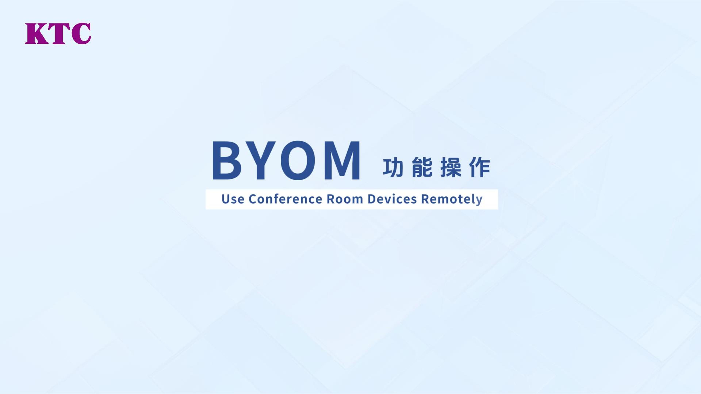

把会议室投屏这件事交给 KShare 一年后，我重新理解了"够用"
从最初图省事装上到现在每天都用，这一年里 KShare 哪些地方让我越用越顺手，哪些坑我踩了三遍才记住，一篇老用户的长期使用报告。
装 KShare 到现在刚好一年。当初换会议室大屏的时候，厂商说"这个平板自带投屏功能"，我扫了一眼叫 KShare，去它的官网上扫了一眼简介——毕竟投屏嘛，能连上能投出来就行，不值得花太多精力挑。
后来发现我低估了"能投出来就行"这句话的分量。
从"能投就行"到"越用越顺手"的三个月
刚开始用的时候最不耐烦的是投屏码。每次开会大屏都会生成一个六位数，轮到谁上台投屏就得念一遍"投屏码是 482917"，前排的能听清，后排的掏手机要敲半天。我当时还动过念头去设置里找"关闭投屏码"的开关——总觉得这玩意儿是多余的，会议室又没外人，开着纯粹是增加摩擦。
现在投屏码的数字我瞟一眼就能记住，敲起来也不慢，更重要的是我再也没动过"关掉它"的念头。原因很简单：有一次隔壁部门的人路过我们会议室，Wi-Fi 自动连上之后差点把他们的 PPT 投到我们大屏上——如果当时投屏码是关着的，那一幕就真要发生了。
从那之后我开始认真看它的设置项。设备白名单、群组密码、主控权限——三层防护的设计其实挺清晰，只是我一开始嫌麻烦没去碰。白名单我现在只给固定的几台工作笔记本加了权限，手机投屏还是走投屏码，但好处是：新同事来会议室投屏，我不用手动放行，他扫大屏上的码就能直接连。
九分屏是真的好用，但带宽也是真的要命
我必须单独说一下九分屏。这是我用得最多也踩坑最多的功能——刚用上的时候太兴奋了，分组讨论直接开九分屏，每组一台手机往大屏上投自己的讨论内容，主持人在中间站着转一圈就能把所有组的进度看完。
但我也踩了三次同样的坑：第一次开九分屏用的是 2.4GHz Wi-Fi，结果九路画面同时卡成 PPT，每个窗口里的人嘴在动但声音对不上；第二次设备倒是都连上了，但其中三台安卓手机可能触发了什么系统级保护机制，投了两分钟就自动断连；第三次我学乖了，提前把接收端改成有线以太网，所有发射端手动降到 720p，才终于流畅起来。
说个反直觉的：九分屏其实不适合真的九台一起投。我发现同时开 4 台的时候最流畅，再多就开始出现延迟叠加，而且每块区域的分辨率降得太厉害，文字小一点就看不清。主控界面能手动选分屏数量，我现在一般开 4 分屏，确实需要横向对比的时候切 6 分屏，9 分屏只在年终汇报这种特殊场合才用一次。
当初没在意的那些功能，现在成了每天都开的
Windows 桌面客户端有个主控中心——我是从官方下载拿的——我当初觉得"主控不主控的，谁先连上谁就是主控呗"，所以每次都是第一台连上的电脑自动拿到主控，后面的人只能当普通投屏端。
后来有次重要会议，一位同事比我们早到了十分钟，他的笔记本先连上了大屏，结果他的主控权限一直没让出来——他自己不知道怎么交主控，我在旁边看着也急。从那之后我就把主控规则改成了"手动抢主控"，桌面客户端点一下就能抢到，而且会弹个确认框不会误触。

还有会话过期机制。这个我直到上个月才发现默认是开着的——发射端连续 30 分钟没操作就自动断开。以前有时候会议开到一半主持人出去接电话，回来发现大屏已经空了，我还以为是 Wi-Fi 断了呢。后来在接收端设置里找到会话超时，改成了 45 分钟，现在再也没出过这种情况。
那些我至今没习惯的地方
说点实话。KShare 的 WebCast 浏览器投屏我至今没成功用过一次——同事说不用装客户端直接在浏览器里输入 URL 就能投，我试了好几次都卡在某个加载页面就不走了，查了一下才知道需要特定的浏览器版本配合，Chrome 行但 Edge 不行，Safari 还有个已知 bug。算了，我还是老老实实让大家扫投屏码吧。
黑屏问题也遇到过几次。刚连接的那 5 到 10 秒经常会先黑一下，等协议完成适配画面才出来，我问过其他同事他们也都遇到过，后来去KShare文档翻了一下才知道这是协议适配过程中的正常现象。还有一次投屏过程中突然黑屏，去看才发现接收端被触摸到了之后进入了休眠——那之后我把大屏的休眠时间改成了"永不"。
时间让它显出什么
我当初装 KShare 的时候想的是"能投出来就行"，现在一年过去了，我得说：投屏这件事远不止"能不能投出来"。权限控制不是锦上添花，是会议室投屏的底线；分屏不是花里胡哨的功能，是真能提高讨论效率的东西；甚至连那个我最开始嫌麻烦的投屏码，现在我都觉得是必须开的。
相反，我当初高估了 WebCast 的便利性——不用装客户端听起来很美，但实际用起来反而更折腾；也低估了接收端硬件的要求，皓丽会议平板本身没问题，但如果不是有线以太网，九分屏根本别想流畅。
去留的问题
会不会换？目前不会。KShare 四端覆盖，安卓 iOS Windows macOS 都能直接装，皓丽大屏又预装了接收端，整个生态已经跑起来了。我试过其他投屏软件，要么得额外加个硬件发射器，要么桌面端功能太单薄没有主控中心，要么分屏只能到 4 屏——综合下来 KShare 还是最顺手的。
什么信号出现我会考虑换？如果哪天九分屏又开始动不动就卡成 PPT，或者权限控制的白名单突然失效，或者接收端频繁黑屏需要重连才能恢复——这三种情况任何一种持续出现一个月以上，我就该认真找找替代方案了。
目前还没出现。所以 KShare 继续留在会议室大屏上，投屏码继续开着，白名单继续管着那几台固定工作本，九分屏继续只开 4 屏。够用就行，这是这一年最大的体会。
对了，这套资料在三个仓库都能拿到：GitHub 主仓库之外，Gitee 和 GitCode 也都各有一份同步，国内访问哪个快就用哪个，我自己有时候也会去仓库里翻一下最近有没有新版本。